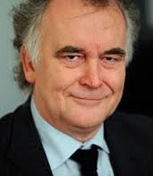
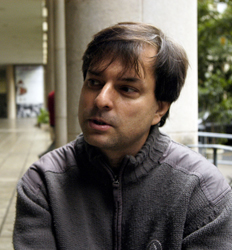
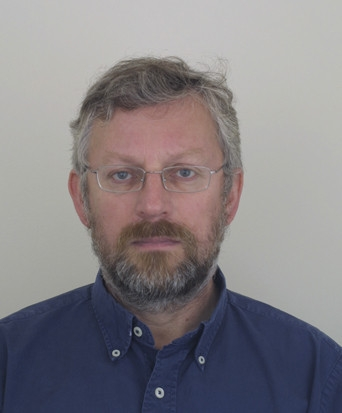

David Arnold
Professor David Arnold MA, PhD, FBCS, CEng, CITP is Director of Research Initiatives and Dean of the Brighton Doctoral College.
As head of Brighton’s Cultural Informatics Research Group his research interests lie in the area of technologies supporting the documentation,
analysis and use of digital cultural heritage data.
In parallel to these roles he has been the coordinator of two large EU projects since 2002, with a total contribution of over €16M.
The latest “Tools and Expertise for 3D Collection Formation” (www.3d-coform.eu) involves 19 partners and is due to complete in Nov 2012.
David holds an MA (1976, Engineering and Computer Science) and PhD (1978, Architecture) from the Centre for Land Use and Built Form Studies at Cambridge,
and was at UEA, Norwich, from 1978-2002, being elected Dean in 1986 and promoted to Professor in 1989. In 2002 he joined the University of Brighton
as Dean of the Faculty of Management and Information Sciences.
Professor Arnold is a Chartered Engineer, a Chartered Information Technology Professional, a member of the UK Computing Research Committee (UKCRC).
He is also a Fellow of the British Computer Society (FBCS) and the EUROGRAPHICS Association of which he is a past chairman.
He was the founding editor-in-chief of the ACM Journal on Computing and Cultural Heritage (JOCCH) and the AHRC Peer Review College.

Luiz Velho
Luiz Velho is a Full Researcher / Professor at IMPA - Instituto de Matematica Pura e Aplicada, and the leading scientist of VISGRAF
Laboratory. He received a BE in Industrial Design from ESDI / UERJ in 1979, a MS in Computer Graphics from the MIT / Media Lab in 1985, and
a Ph.D. in Computer Science in 1994 from the University of Toronto under the Graphics and Vision groups. His experience spans the fields
of modeling, rendering, imaging and animation. He has published extensively in conferences and journals of these areas. He is also
author of several books and has taught many courses on Visual Computing topics. He coordinated various research and development
projects related to 3D reconstruction.

Jorge Lopes
Jorge Lopes is a research and professor of the Graduate School of Arts and Design at PUC Rio.
He is the coordinator of NEXT - Tridimensional Experimentation Group - DAD / PUC Rio, and
a full research under the Ministry of Ciência, Tecnology and Inovation. He is also a collaborator of the
National Museum - UFRJ. He has a PhD in
Product Design - Royal College of Art, and has many works in 3D printing within the permament collection
of the Science Museum in London. Currently is Research Fellow at the Archeology Department of the
National Museum in scanning tecnologies for archeology.

Karina Echavarria
Karina is a Senior Lecturer at the University of Brighton. She obtained her Computer Systems Engineering degree from the ITESM,
Mexico in 1999; her PhD at the University of Wolverhampton in the area of knowledge-based engineering in 2005 and an MA in Histories and
Cultures at the University of Brighton in 2008. Karina has worked in several European projects researching in the areas of digital collections
and 3D technologies for cultural heritage organisations producing research outputs in interdisciplinary areas such as computer graphics,
information and knowledge management as well as cultural heritage. She is currently the Principal Investigator on the national EPSRC project
“Automatic Semantic Analysis of 3D Content in Digital Repositories” (2014-2015). Her research interests include the documentation and visualisation
of heritage collections, information and knowledge management of 3D artefacts, semantic technologies, 3D printing, and the practical aspects
of deployment in the heritage sector. She serves in various international committees in these areas, and is currently Information Director for
the ACM Journal in Computing and Cultural Heritage.

Roberto Scopigno
Roberto Scopigno is a Research Director at ISTI, an Institute of the Italian National Research Council (CNR) located in Pisa,
and leads the Visual Computer Lab. He graduated in Computer Science at the University of Pisa in 1984, and has been involved in Computer Graphics since then.
He is currently engaged in several EU and national research projects concerned with multiresolution data modeling and rendering,
3D digitization/scanning, scientific visualization, geometry processing, virtual reality and applications to Cultural Heritage.
He published more than two hundreds papers in international refereed journals/conferences with Google Scholar h-index 39 and more than
7100 citations. He presented invited lectures or courses at several international conferences. He was Co-Chair of several international
conferences and served in the program committees of international events.
Since 2012 he is Editor In Chief of the ACM Journal of Computing and Cultural Heritage; he served as Editor in Chief of the
journal "Computer Graphics Forum" (2001-2010). He is member of Eurographics, served as elected member of the Eurographics
Executive Committee since 2001 and was the Eurographics Chairman on 2009-2010. He is recipient of several awards, including the EG
Distinguished Career Award (2014), the EG Outstanding Technical Contribution Award (2008) and the Tartessos Virtual Archeology Award (2011).

Marcus Granato
Has a BA in Metallurgical and Materials Engineering (UFRJ, 1980), and Master and PHD in the same field at COPPE/UFRJ, and
thesis was entitled "Restoration of Valuable Historical Scientific Instruments". He is researcher and coordinator of
museology of the Museum of Astronomy and Related Sciences since 2004. He
coordinates research and technological
development projects, and has organized several national and international events. In 2012 was coordinator of the 31º Symposium of
the International Commission of Scientific Instruments.
Marcus also lectures at the Graduate Program of Preservation of Scientific and Technological Collections (MAST) and
the graduate Program of Museology and Heritage (UNIRIO/MAST), of which he is also the coordinator.
His main research interests concern museology and heritage in the following fields: scientific heritage, conservation of metallic objects,
and science dissemination.

James Stevenson
James Stevenson was the manager of the Photographic Studio at the Victoria and Albert Museum, the National Museum of Art and Design
between 1993 and 2013. He has worked as a photographer since 1974 previously at the National Maritime Museum, and within the Health Service
and the Horse-racing Industry.
The V&A is one of the largest museum collections in the UK and the image archives managed by the Photographic Studio.
The V&A was founded in 1856 with the Photographic Studio being one of the first departments formed within the new institution. The Photographic Studio has
managed the archive of images continuously since that time. This period of management covers almost the entire history of the photographic process,
with today’s expertise concentrating on the digital environment. Stevenson’s team both produces and manage this large digital archive. The Photographic
Studio produces over 50,000 images per year of the museum collection, its buildings and activities. The entire digital archive now comprises of 300,000 digital
files of 2D images, QT and movie files and 3D virtual models.
Stevenson has been involved in several EU computer graphic research projects notably ARTISTE, SCULPTEUR, ARCO and 3D-COFORM.
The V&A studio has also participated in many UK funded projects. The products of these projects are now being integrated into current V&A databases.
Current activity is concentrating on the issues associated with the digitisation of extremely large cultural heritage collections; their management
and how these can be efficiently used by a large international visitor base.
Stevenson is now joint partner in the company Cultural Heritage Digitisation Ltd in London, which specialises in archival
scanning of large works on paper. www.culturalheritagedigitisation.co.uk